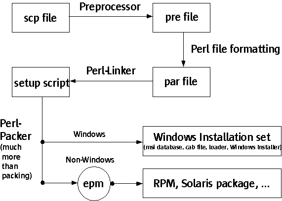

HowTo create native installation sets for
OpenOffice.org 2.x
by Ingo Schmidt
Introduction:
This HowTo describes the necessary steps to create native installation sets for OpenOffice.org 2.0. This includes Windows Installer for the Windows platform, RPMs for Linux and Solaris-packages for Solaris. Because of the usage of EPM is will also be possible to create native installation sets for all operating systems supported by EPM. In the current EPM version 3.7 this are: AIX, FreeBSD, NetBSD, OpenBSD, HP-UX, Debian software distribution, IRIX, MacOS X. The currently available process is adapted to Windows, Linux and Solaris. Therefore it might be necessary to make some changes in the new packaging process for the other platforms. The installation sets are created in the new cvs module „instsetoo_native“, but it is also still possible to create installation sets using the old setup application in the cvs module „instsetoo“. But in the near future we want to remove the module „instsetoo“ and with it the old setup application located in the cvs module „setup2“
The packaging program:
New CVS modules were introduced for the usage of native installer. This are „setup_native“ and „instsetoo_native“. Additionally the packaging program was added to the „solenv“ module.
„solenv“: The new packaging program is completely Perl based. You find it in solenv/bin. The main program is called „make_installer.pl“. It uses all the Perl submodules located in solenv/bin/modules/installer.
„setup_native“: This new cvs module contains at the moment the Windows Installer custom actions, that are executed during the installation process.
„instsetoo_native“: This is the new packaging module. In the output tree of „instsetoo_native“ the installation sets are created. You will find there also a preregistered services.rdb, many unpacked zip files, logging files and many files more. Therefore you need sufficient disc space for the „instsetoo_native“ directory. This shows that the new packaging process includes much functionality, that was included in our old setup application, but is not supported by the native installers. Therefore is also takes more time to create the native installation sets, but we are still trying to optimize this process.
The packaging process:
Included in the new packaging process are different Perl programs, that create the native installation sets based on the information stored in our platform independent installation set description language „scp“. Files, directories, and many things more are described in the cvs module „scp2“. Based on these files, a platform and product specific setup script is created, which is then used by the new packaging process to create the native installation sets. The different processes are shown in the following graphic:

Prerequisites:
For the new native packaging process, new prerequisites are needed. Especially there are different prerequisites for the Windows OS and the non-Windows OS:
Windows: For creating successfully Windows Installer installation sets it is needed, that you have installed the Windows Plattform SDK with Windows Installer SDK, Version February 2003. This is available at http://www.microsoft.com/msdownload/platformsdk/sdkupdate/ .
The two Windows Installer files instmsia.exe and instmsiw.exe (non-Unicode and Unicode version of the Windows Installer service) have also to be downloaded from the Microsoft homepage. For the packaging process they have to be located in the directory „instsetoo_native/inc_openoffice/windows/msifiles“. This will probably change in the near future.
Non-Windows:
For the non-Windows platforms it is essential, that you have installed EPM, v. 3.7 on your system. You can download it from http://www.easysw.com/epm/
Using EPM for Linux or Solaris we approve the usage of a patch, that can be downloaded here. This patch fixes the following problems:
The RPMs or Solaris packages are relocatable. This means, that the administrator can change the OpenOffice.org installation directory. Non relocatable RPMs or Solaris packages are always installed at a fixed place in the directory system. In the version 4.0 of EPM it is planned, to make the packages relocatable, then this patch becomes superfluous.
A second problem occurs only on Linux and is caused by some dependency problems of the OpenOffice.org libraries. Without the patch the OpenOffice.org core RPM can only be installed with the parameter „--nodeps“. If you use the patch, you can simply install „rpm -i openoffice-core-680-1.i586.rpm“.
Using Solaris 8 and Solaris 9 maximum package name contains 9 characters. Because this is not sufficient for for the different OpenOffice.org packages, we decided to make use of Bug 4025718, which introduces the maximum of 25 characters for a package name. This requires that the following patches are installed on Solaris systems:
The longer packages names we
introduce by Bug 4025718.
If your building packages on Solaris 8
you need patches:
110934-12 (sparc) & 110935-12 (x86)
If
your building packages on Solaris 9 you need patches:
113713-03
(sparc) & 114568-02 (x86)
Installation of native installation sets:
Windows: The installation set is located in the directory instsetoo_native/wntmsci10.pro/OpenOffice/install . You find there an executable „setup.exe“, which you can simply start. Then you get the well-known Windows Installer GUI that will guide you through the installation process. The OpenOffice.org can only be removed with the „Add-Remove-Software-Applet“, that is located in the Control Panel.
Linux: The installation set is located in the directory instsetoo_native/unxlngi5.pro/OpenOffice/install . You find there different RPMs belonging to the installation set. You can decide wheter you want to install all of them or only parts. The names of the RPMs are not fix yet. First of all you have to install the core RPM openoffice-core-680-1.i586.rpm. All other RPMs have a dependency to this core package. For installing a RPM you need to have root priviliges. Than you can simply install it by :
rpm -i openoffice-core-680-1.i586.rpm --prefix=/opt/myOOOdir (relocatable with the optional parameter --prefix)
Without using the EPM patch, you also have to use the parameter „--nodeps“.
You can remove the RPM with the command (this is also system dependent)
rpm -e openoffice-core-680-1.i586.rpm
Solaris: The installation set is located in the directory instsetoo_native/unxsols4.pro/OpenOffice/install (instsetoo_native/unxsoli4.pro/OpenOffice/install for Solaris x86) . You find there different Solaris packages belonging to the installation set. You can decide wheter you want to install all of them or only parts. The names of the packages are not fix yet. First of all you have to install the core package OOOopenoffice-core. All other packages have a dependency to this core package. For installing a Solaris package you need to have root priviliges. Than you can simply install it by :
pkgadd -a adminfile.txt -d . OOOopenoffice-core (relocatable with the optional admin file (parameter -a) in which "basedir=/opt/myOOOdir" has to be defined)
You can remove the Solaris package with the command:
pkgrm OOOopenoffice-core
And now have fun with the native installer :-)